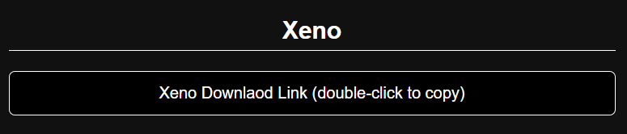
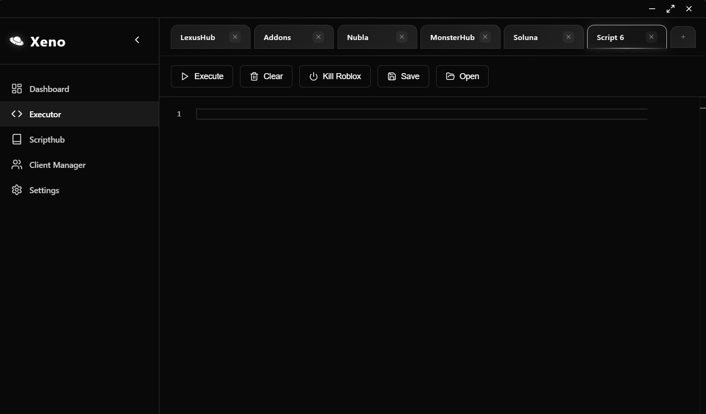
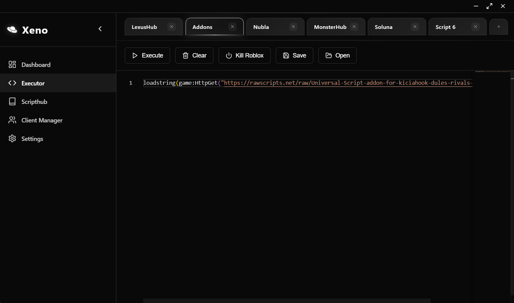
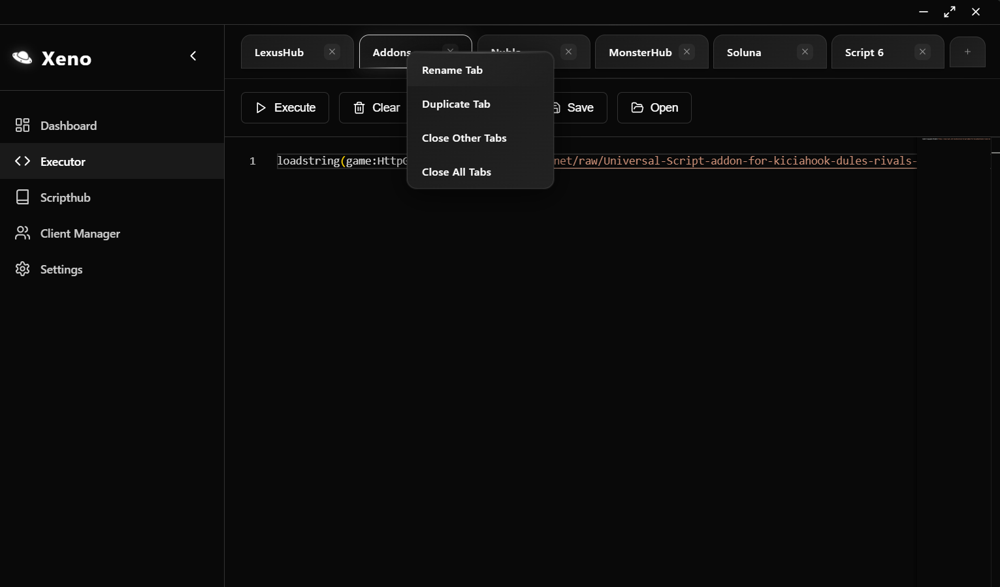
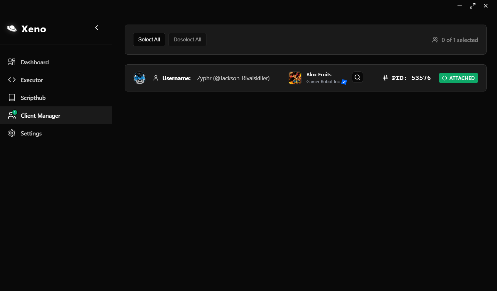
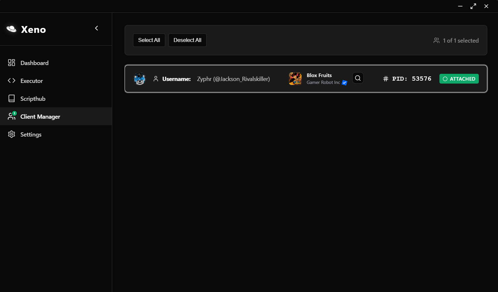

Tutorial
Double-click the Xeno download link on the website main page, paste it into a new browser tab, then download and open it

Once you’ve downloaded it, it should look like this

Now go to Settings in the bottom-left corner, then turn on 'Auto Attach'

After enabling Auto Attach, go to Executor

Paste a script from this website or anywhere else like Scriptblox

You can also right-click the Scripts tab to rename it

Go to Client Manager. If you don’t see your username that means Roblox isn’t open. Restart Xeno if needed.

If it says 0 of 1 selected, click your username/bar and it should say 1 of 1 selected

After this, you're all set! Go back to Executor and click Execute. Enjoy exploiting!